BLOGS
Concept of overfitting
In this blog we will be learning about the concept of overfitting using Higher order linear regression.First lets see the basic definition of overfitting and underfitting.
Overfitting refers to model that models the training data too well. It will even pick the the noise and random fluctuations and lean as concept.When model is too complex, training error is small but test error is large
when Model Complexity > Available Data overfitting occurs
Underfitting occurs when the model or algorithm does not fit the data well enough i.e when the model is to simple
when Model Complexity < Available Data underfitting occurs
The link to my complete code on Google colab
Lets see the each steps that I used to approach the problem where I reduced the loss and increase the performance of the model
In the below code we will be generating 20 sample data points using uniform distribution between 0 and 1 for X.We will sample N from the normal gaussian distribution Then implementing the function y as sin(2.pi.x) .The use of random seed allows us to omit the value of 0 in the uniform and normal distributions.
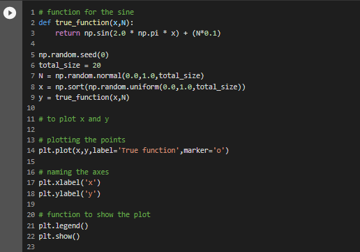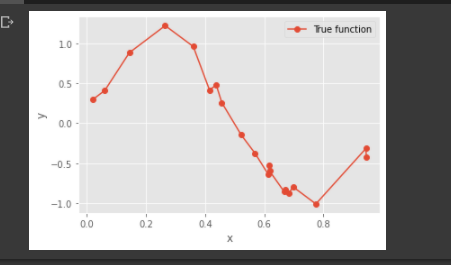
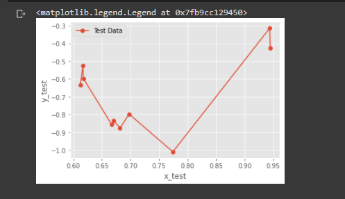
From the above table we can see that the magnitude of the coefficients/Weights increases dramatically as the order of the polynomial increases.

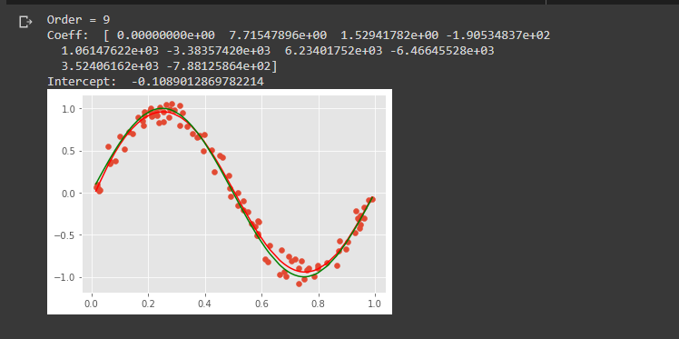
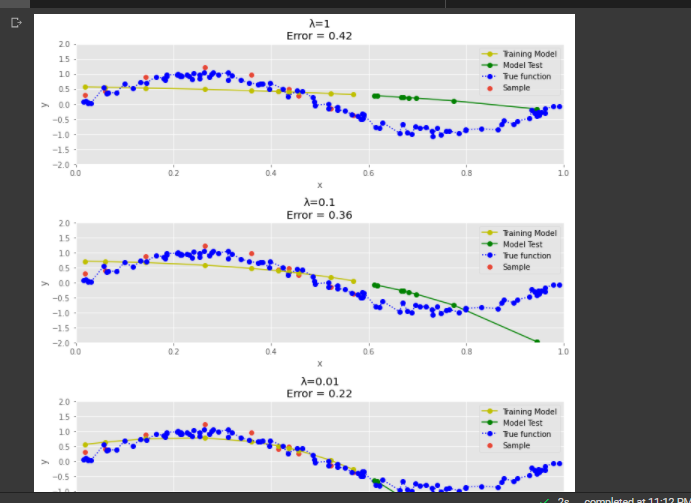
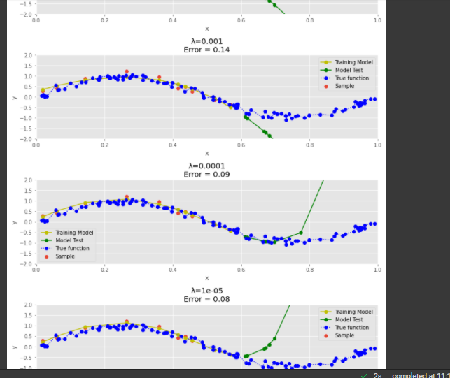
The challenge that I faced while doing this code was, I was not able to implement the Regularization concept even though I understood the need of regularization or what it is therotically.
Please find below the references I used to understand the concept and build the code.
1)Understanding underfitting vs overfitting using scikitlearn
2) Numpy documentation- To understand the concepts of random.uniform and random.normal functions which was used to generate the data(x,y)
3) Used this blog understand the Regularization Concept
4) w3school webiste to understand the concept of plotting graphs
Training an image classifier using CNN on the CIFAR-10 dataset
We will be building an image classifier using CNN(convolutional Neural Net) on the famous dataset--The CIFAR-10 dataset. Please find below the complete guide with code and various steps involved from downloading the dataset to building ,training and testing the model
The link to my complete code on Google colab
Lets see the each steps that I used to approach the problem where I improved my accuracy from 54% to 71%
Data exploration is one of the most important step in any machine learning problem. If you understand your data well, we have half the solution since you will be building the model depending on the data. Before starting to work on any dataset, how many classes are there and what the images look like, what is the size of dataset Here, in the CIFAR-10 dataset,
1)Images are of size 32X32X3 (32X32 pixels and 3 colour channels namely RGB(Red-Green-Blue)
2)There are 10 classes. (classes = ('plane', 'car', 'bird', 'cat','deer', 'dog', 'frog', 'horse', 'ship', 'truck')
3)The dataset consists of 60000 with 6000 images per class.
4)There are 50000 training images (this means we get 5000 images per class for training our NN) and 10000 test images.
We can download the dataset train and test datasets as follows:
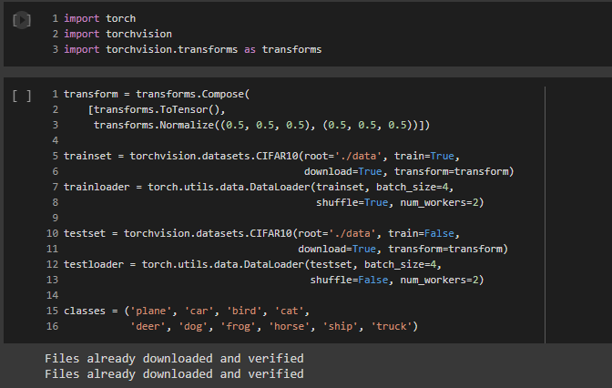The code to check some images from the dataset
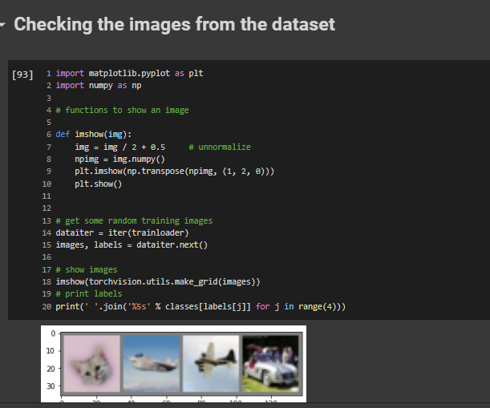Now, we will create a basic model for solving our classification problem. We will be building using the nn.Module class already provided by PyTorch, it contains the initialization and forward methods.
For training our model we need to form batches of images from our dataset, so we will be using the DataLoader() function provided by PyTorch. DataLoader gives us a dynamic environment to create the batches and makes our data easily iterable.
In this code, I have implemented three convolution layers and five linear layers
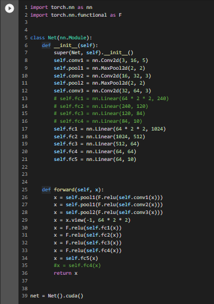Initially I ran the program on CPU, since the number of networks and layer was very small and the epoch times was just two times. But once I started experimenting by increasing the number of convolution and linear layer and the epoch times, the program started running for more than 10 minutes which was very time consuming. That’s when I got the idea of using GPUs instead of CPUs for training the network, as it will be faster, and the CPU will be free to perform other processes.
To enable GPU in our Google Colab, we need to select the following option Runtime-->change runtime type.
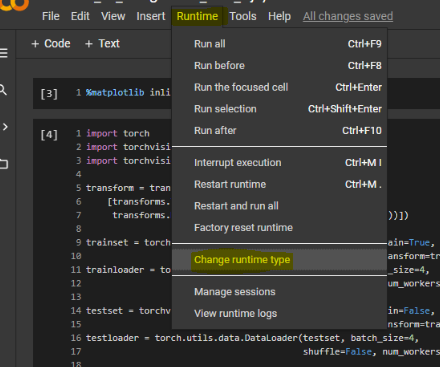For the GPU to work we need to send the inputs and targets at every step to the GPU too and the model must be in GPU as well.We need to make the below changes in the code for the GPU to work
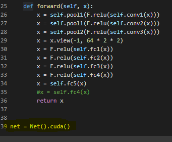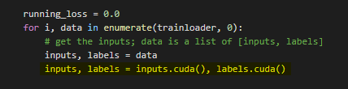
After doing this you will notice a massive speed up in your training of network.
The loss function used is the cross-entropy loss which has in-built negative log likelihood loss and softmax also, which can be easily used for the classification task. The optimizer was initially used with SGD(Stochastic gradient descent) but I am experimenting with various other optimizers like Adam(Adaptive Moment Estimation), Adagrad,Rprop,RMSprop and fine tuning it to improve the accuracy.
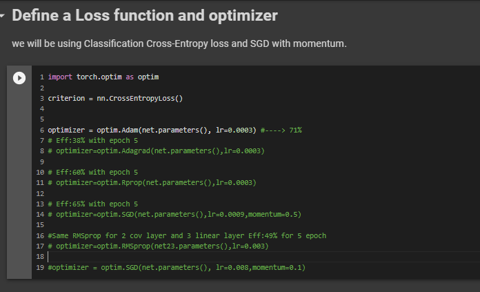In this step we just need to loop over our data iterator, and feed the inputs to the network and optimize.Finally we save the trained model.
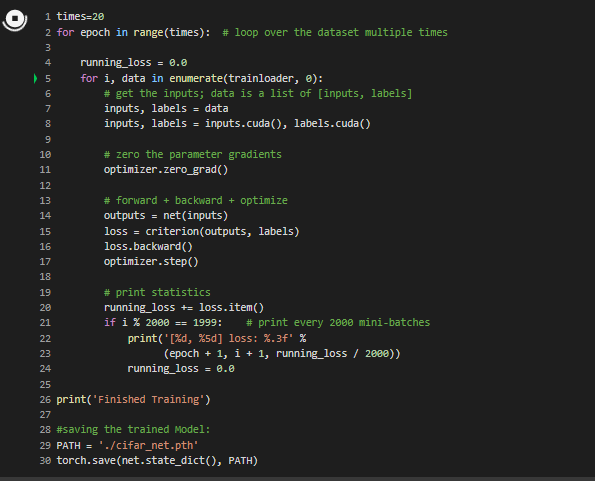This is the final step, we have built our model, trained the model, this step is to test our model and how accurate it is on our prediction.
The below output will show the average accuracy of the network and the accuracy of each classes.
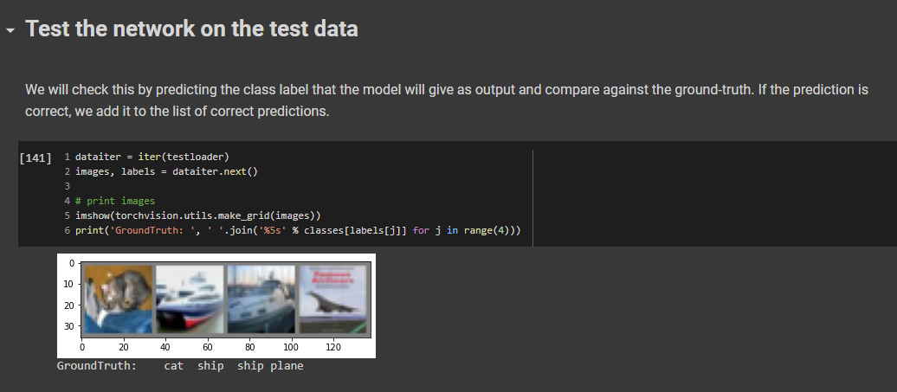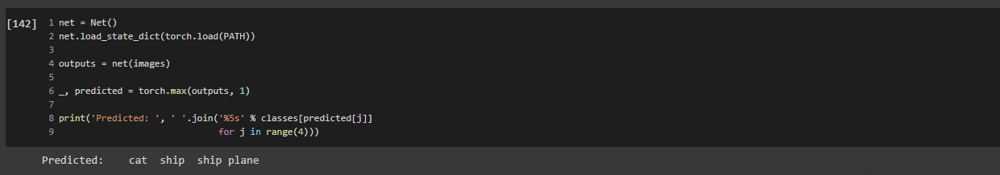
The Average accuracy of the Network
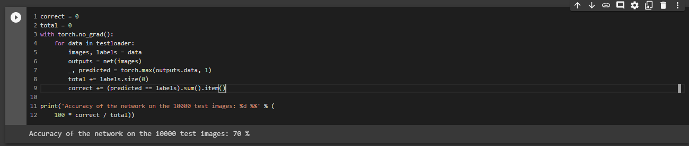The Average of each classes
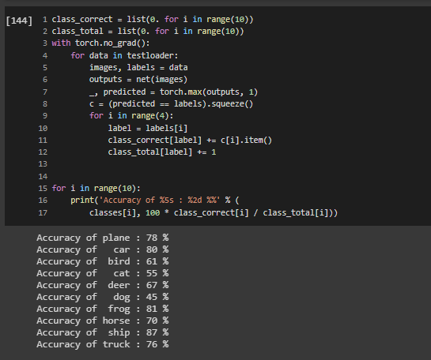•Using GPU will save a lot of training time when compared to CPU, when you increase the Convolutional, linear layers layer and the epoch times.
• When I used SGD as optimizer, it was very slow as it oscillates when there are deep sides. But using Adam (Adaptive Moment Estimation) the learning was better and fast, it took a smaller number of epochs to train the network, its adaptive learning rate, bias-correction and momentum make it a good choice.
• You can change the number of epochs, more epochs mean more training and better the model in its accuracy.
Please find below the different trials that I did using different models,changing the layers and the parameters
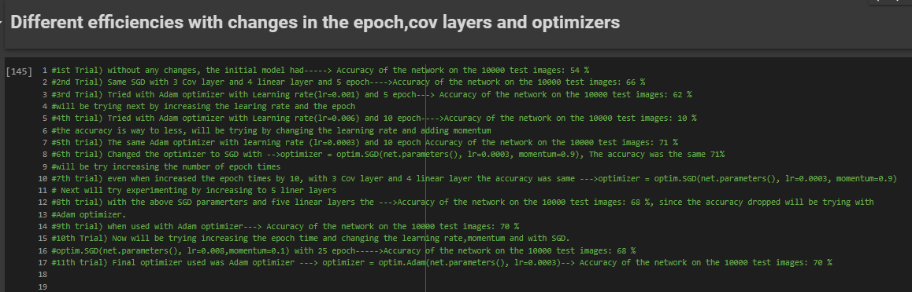Please find below the references I used to understand the concept and build this model
1) Pytorch tutorial for Image classifier
In this tutorial a basic Neural Net(2x3 2-convolution,3-Linear) was used and SGD was used as an optimizer. I have experimented by increasing the convolutional and linear layes,using a Adam optimizer,increasing the epoch times and running on GPU for time efficiency. This resulted in improving my accuracy to 71%
3)The CIFAR-10 dataset-for exploratory data analysis
Titanic - Machine Learning from Disaster Project from Kaggle Walk Through
In this blog, I hope to show how I worked through the famous Titanic problem in kaggle for Beginners. The goal is to correctly predict if someone survived the Titanic shipwreck.
In this project we need to create a machine learning model that predicts which passengers survived the Titanic shipwreck. In this challenge, I built a predictive model that answers the question: “what sorts of people were more likely to survive?” using passenger data (ie name, age, gender, socio-economic class, etc).
Lets see the each steps that I used to approach the problem where I improved my score of 0.76555 to 0.77511. I am adding my kaggle Notebook that I used for the Project for reference
There are two files that we would be given under the data tab on the top of the competition page. The two files that we use are the : (1) train.csv (2) test.csv
train.csv contains the details of a subset of the passengers on board (891 passengers, where each passenger gets a different row in the table). The values in the second column "Survived" can be used to determine whether each passenger survived or not. If it is '1' - the passenger survived, if '0' the passenger died.
test.csv-- Using the patterns we find in train.csv, we have to predict whether the other 418 passengers on board (in test.csv) survived.
Our prediction submission file must contain only two columns, if we have more than that we will face issue while submission.The file must contain a "PassengerId" column containing the IDs of each passenger from test.csv.A "Survived" column (that we will create!) with a "1" for the rows where we think the passenger survived, and a "0" where we predict that the passenger died.


From the above table we can see that there are lot of null values in Age and Cabin Column and two null values in Embarked Column out of total 891 entries
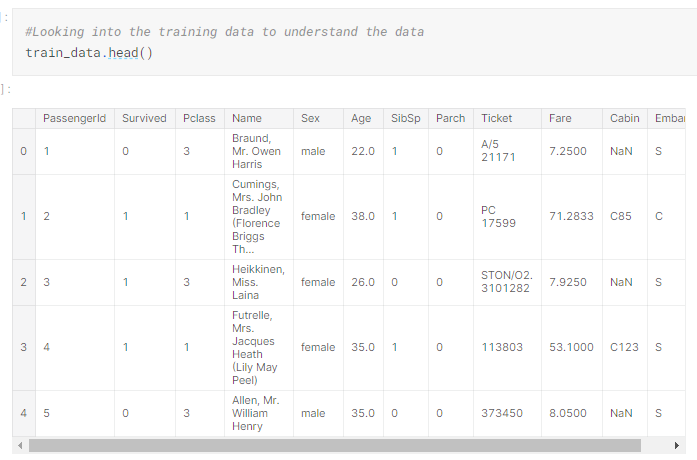To better understand the numerical data , we can use the .describe() method.This gives us an understanding of the central tendencies of the data
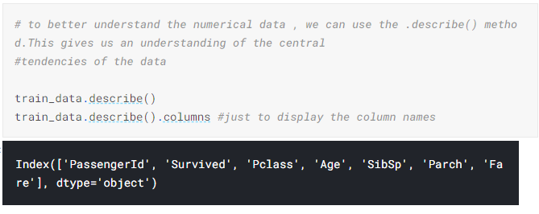
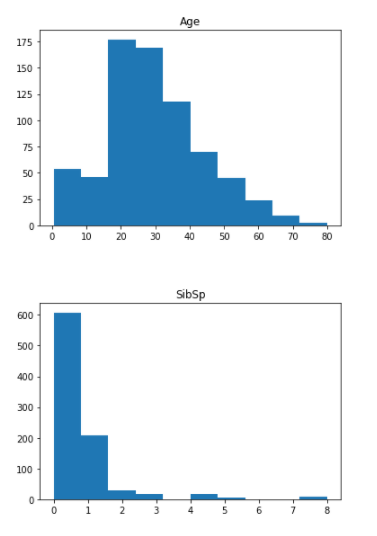
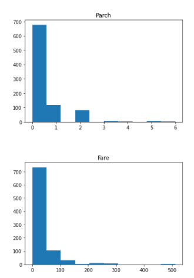
From the above histogram we can know that the Age is a normal distribution whereas the other features are not normally distributed. So, we might need to normalise the features like Fare, to have its correct contribution during the Prediction
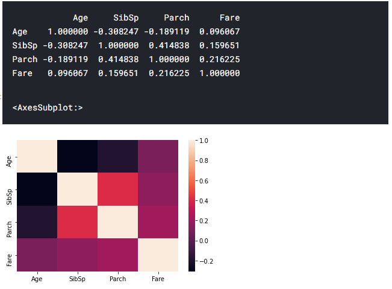
From the above heatmap we can infer some correlations between features. for eg: 1) The number of parents and number of sibilings ie family tend to travel together.2)The Age and the number of siblings(SibSp) has a negative correlation and such. These help us to understand the different relationship in our data.
Even though it might not contribute directly, we might get a understanding of the data like younger people have survived more and the people who paid high fare had high chances of survival. These are the things we need to make note of while building our models.
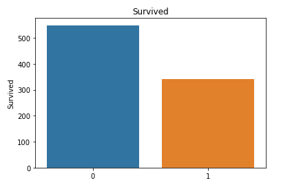
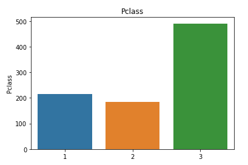
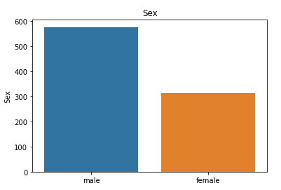
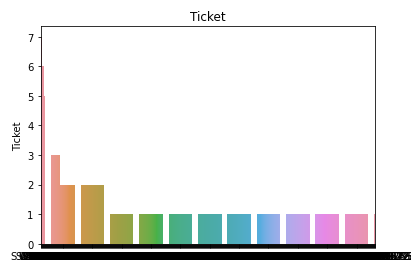
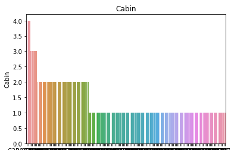
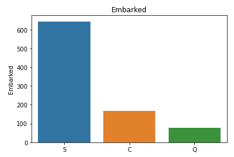
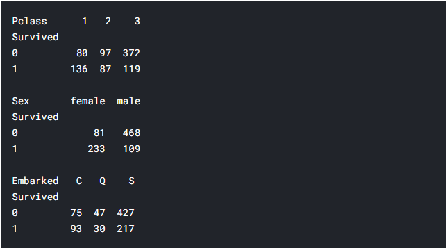
From the above pivot table we can understand that relatively the lot of people from first class survived,lot of women compared to men were rescued first.We can understand that this feature(sex) will play an important contribution in the prediction.
I have used what's known as a random forest model. This model is constructed of several "trees" that will individually consider each passenger's data and vote on whether the individual survived. Then, the random forest model makes a decision based on majority: the outcome with the most votes wins.The code cell below looks for patterns in four different columns ("Pclass", "Sex", "SibSp", and "Parch") of the data. It constructs the trees in the random forest model based on patterns in the train.csv file, before generating predictions for the passengers in test.csv.
Creating the RandomeForestClassifer model to train and fit the data. After that we predict whether the passengers in the test_data had survived or not(0/1). At the end we load the predictions to prediction_submission.csv.